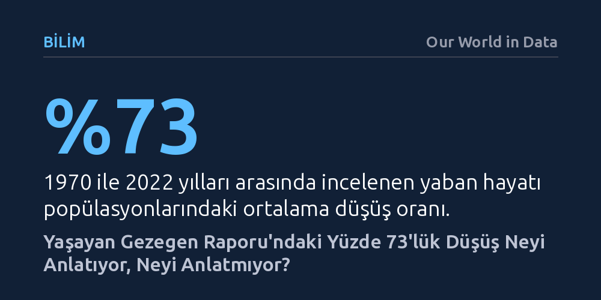

BILIM · Our World in Data · 2026-10-09
2026 Yaşayan Gezegen Raporu incelenen yaban hayatı popülasyonlarında ortalama yüzde 73 düşüş gösterse de bu durum tüm hayvanların yok olduğu anlamına gelmiyor. İncelenen popülasyonların yaklaşık yarısı gerilerken diğer yarısı sabit kalıyor veya çoğalıyor.
Tüm yaban hayatının tükendiği yanılgısını düzelterek koruma kaynaklarının gerçekten tehlike altındaki popülasyonlara yönlendirilmesi gerektiğini gösterir.

Dünya Doğayı Koruma Vakfı (WWF) ve Londra Zooloji Derneği'nin yayımladığı 2026 Yaşayan Gezegen Raporu, ilk bakışta yeryüzündeki yaban hayatının neredeyse dörtte üçünün silindiği izlenimini uyandırıyor. Ancak medyada sıklıkla karşılaşılan "türlerin yüzde 73'ü tükendi" veya "hayvanların yüzde 73'ü yok oldu" şeklindeki felaket başlıkları gerçeği yansıtmıyor. Rapor, 1970 ile 2022 yılları arasında takip edilen 35 binden fazla omurgalı popülasyonunu kapsıyor; bitkiler ve omurgasız canlılar bu hesaba henüz dahil değil.
İncelenen veriler tüm türlerin kitlesel bir yok oluş içinde olduğunu değil, popülasyonlardaki ortalama değişim oranını temsil ediyor. Nitekim incelenen hayvan topluluklarının kabaca yarısı sayıca gerilerken, diğer yarısı ya varlığını koruyor ya da artış kaydediyor. Dolayısıyla felaket senaryoları kurmadan önce bu istatistiğin tam olarak neyi ifade ettiğini ve nasıl hesaplandığını doğru kavramak gerekiyor.
Yaşayan Gezegen Endeksi, on binlerce farklı hayvan topluluğunun zaman içerisindeki sayısal değişim hızları izlenerek oluşturuluyor. Karşılaştırmada 1970 yılı baz alınsa da çoğu popülasyona ait kayıtlar bu kadar eskiye gitmiyor; araştırmacılar mevcut kısa ve seyrek zaman aralıklarındaki değişim oranlarını derliyor. Her bir popülasyonun büyüme veya küçülme hızı çıkarıldıktan sonra bu oranların geometrik ortalaması alınıyor ve belirli ağırlıklandırmalar yapılarak küresel endeks değerine ulaşılıyor.
Kullanılan matematiksel yöntem sebebiyle, birkaç popülasyonda görülen çok sert düşüşler genel ortalamayı ciddi biçimde aşağı çekebiliyor. Bu nedenle endeksteki yüzde 73'lük gerileme, dünya genelindeki toplam hayvan birey sayısının yüzde 73 azaldığı anlamına gelmiyor; yalnızca incelenen popülasyonların değişim oranlarının ortalama seyrini gösteriyor.
Raporun 2022 baskısında yüzde 69, 2024 baskısında ise yüzde 73 düşüş açıklanmıştı. 2026 güncellemesinde de oranın yine yüzde 73 çıkması, son iki yılda hiçbir şeyin değişmediği veya 2022 ile 2024 arasında birdenbire büyük bir çöküş yaşandığı anlamına gelmiyor. Ortaya çıkan farklar, son yıllarda gerçekleşen ani kayıplardan ziyade endekse dahil edilen veri setinin zaman içinde genişlemesinden ve çeşitlenmesinden kaynaklanıyor.
Son raporda incelenen popülasyon sayısı yaklaşık 1.000, tür sayısı ise 300 kadar arttı. Özellikle önceki yıllarda veri eksikliği bulunan Afrika kıtasına bilinçli bir ağırlık verildi; kıtadan eklenen popülasyon sayısı yüzde 14, tür sayısı ise yüzde 38 artış gösterdi. Yeni popülasyonlar eklendikçe 1970'ten günümüze uzanan eğrinin tamamı geriye dönük olarak yeniden kalibre ediliyor ve grafik bir bütün olarak kayıyor.
Yaban hayatı popülasyonlarının yaklaşık yarısının gerilerken diğer yarısının direnç göstermesi veya büyümesi, yaşanan biyoçeşitlilik krizini küçümsemeyi gerektirmez. Aksine bu ayrım, sınırlı koruma bütçelerini ve insan kaynağını doğru hedeflere yönlendirebilmek adına kritik bir fırsat sunuyor. Bütün canlıların aynı derecede zor durumda olduğunu varsaymak yerine, hangi popülasyonların çöküşte olduğunu ve hangilerinin varlığını sürdürebildiğini tespit etmek gerekiyor.
Başarılı olan veya istikrarını koruyan toplulukların dinamiklerini anlamak, tükenme tehlikesi altındaki türleri kurtaracak somut koruma politikalarını üretmenin en etkili yoludur. Toptancı bir çaresizlik yerine verinin ayrıntılarına odaklanmak, hedefe yönelik ve verimli doğa koruma müdahalelerine zemin hazırlıyor.